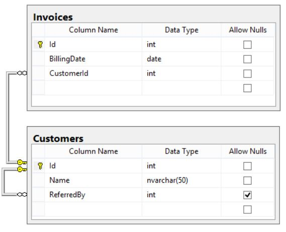

My In Depth SQL Comprehension
Intro
SQL is the declarative lanuguage which we use to say what we want to get and computer needs to figure out the computation tasks to provide quieried result. In this post I put my notes and examples that helps me to understand different aspects of SQL, enjoy :) .
In this section I describe following concepts:
Terminology
- Primary key - a field or fields combination that idetifies a specific row uniquely. It implicits NOT NULL constraint and hast to be UNIQUE.
- Foreign key - it references primary key of another table bulding relationship between tables. It can be repeated in one to many relationship.
- In above example pk stands for primary key and fk stands for foreign key.customers
- customer_id: pk integer
- phone: string
- email: stringorders
- order_id: integer
- status: string
- customer_id: fk integer
- In one to many relationship: one customer can have many orders, so we can find one customer multiple times in the orders table.
- As per one to many relationship, one order cannot have multiple customers. - Normalization - aiming for minimizing redundancy and dependency within tables.
Features
App includes following features:
Demo
SELECT
JOIN
- Join is a keyword when quering more than one table based on the relationship between a specific columns of the joined tables.
- When using JOINs, keys play a very important role as we reference them on what column of one table matches what column in the another table.
- Inner join returns rows when there is at least one match of rows between the tables.
- Full Join returns all the rows from the left hand side table and all the rows from the right hand side table.
- Let's take two table schemas for an example:
tblVideo
- video_id: pk integer
- author_id: integer
- video_duration: floattblView
- video_id: integer
- viewer_id: integer
- viewer_timewatch: float - Lets answer fllowing questions with SQL:
How many publishers have at least one viewer?SELECT COUNT(DISTINCT vd.author_id) FROM tblVideo vd INNER JOIN tblView vw ON vd.video_id = vw.video_id
- It doesn't count authors whose videos are not in the tblView.
- If I want to count disctinct author's id, I wouldn't need any JOINs and do select only on tblVideo. - LEFT JOIN:
- Here is the snippet of data schema:
source: toptal.comSELECT i.Id, i.BillingDate, c.Name, r.Name AS ReferredByName FROM Invoices i LEFT JOIN Customers c ON i.CustomerId = c.Id LEFT JOIN Customers r ON c.ReferredBy = r.Id ORDER BY i.BillingDate ASC;
- With LEFT JOIN we make sure that all the invoices will be returned no matter what (in case of any NULLs within Customers table).
- First LEFT JOIN joins customer id pk with customer id fk in the Invoices table.
- Second LEFT JOIN joins customer id pk with cusotmer id fk in the Customer table.
- ORDER BY orders outcome by date. We can append ASC/DESC if ascending or descending ordering.
UNION
- Merges the contents of two structurally-compatible tables into a single combined table removing duplicated records.
- There is also UNION ALL that does the same things but keeps duplicated records.
- Performance of UNION ALL is better than UNION, since UNION requires the server to do the additional work of removing any duplicate.
EXCEPT
- Allows to fetch values from one table that are not in another table.
create table test_a(id numeric); insert into test_a(id) values (10); insert into test_a(id) values (20); insert into test_a(id) values (30); insert into test_a(id) values (40); insert into test_a(id) values (50); create table test_b(id numeric); insert into test_b(id) values (10); insert into test_b(id) values (30); insert into test_b(id) values (50); select * from test_a except select * from test_b; ---------------------- 20, 40
- 20 and 40 are the values that are not present in test_b table.
LIMIT
- Limiting select query results to specific numbers of records:
SELECT * FROM ( SELECT * FROM employees ORDER BY salary DESC ) LIMIT 10;
- We fetch 10 highest salaries in employees tabel.
TOP
- We can select x top records:
- let's assume we have customers table and the fields customer_id,
- let's fetch first 100 odd cutomer_id values.SELECT TOP 100 customer_id FROM customers WHERE customer_id % 2 = 1 ORDER BY user_id
GROUP BY
- Groups rows when they have the same value in the field we indicate:
SELECT COUNT(CustomerID), Country FROM Customers GROUP BY Country HAVING COUNT(CustomerID) > 3;
- We count all customers for a specific country but we display countires where count is bigger than 3.
- HAVING simply puts filter on COUNT(CustomerID) outcome column.COUNT(CustomerID) Country 9 Brazil 11 France 11 Germany 5 Mexico 5 Spain 7 UK 13 USA 4 Venezuela
- WHERE vs HAVING:
- When GROUP BY is not used, then WHERE and HAVING clauses works the same.
- When GROUP BY is used, then WHERE clause is used to filter records from a result and filtering works before any grouping. HAVING clause is used to filter values from a group.
UPDATE
CASE
- We can use Case to give some conditons:
- assuming we have tblTest table and Nmbr filed,
- tblTest has 50 rows and Nmbr field contains 1s and 0s,
- let's replace 1s with 11s and 0s with 10s:update tblTest set Nmbr = case when Nmbr = 0 then 10 else 11 end;
Setup
No specific installation required.